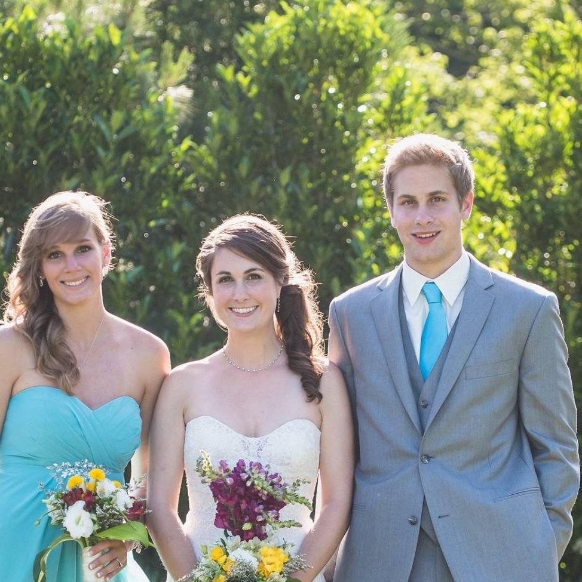
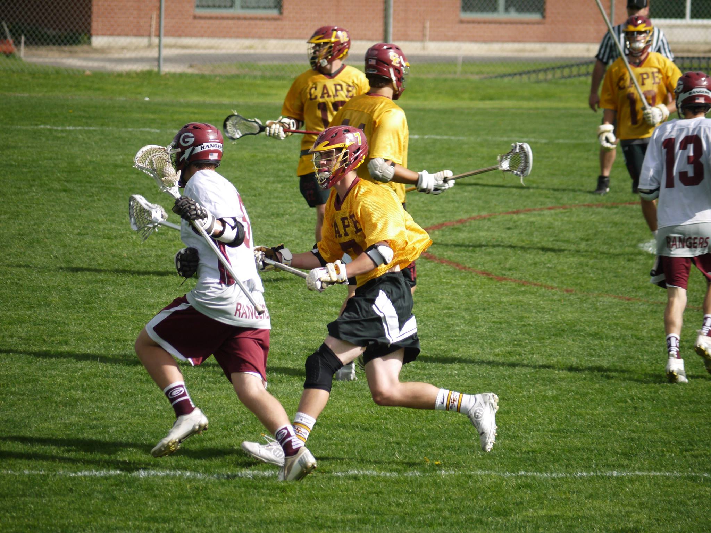

Gwynn Zambello
2722 Durant Avenue, Berkeley, CA 94720| 207-522-0975 | lgzambello@berkeley.edu

EDUCATION
B.S. Economics, B.A. Computer Science, Expected May 2018
High School: Greely High School (GPA 94.7/100)
University of California Berkeley(GPA 3.2)
SAT 2150, SATII (mathB) 800/800, SATII (chemistry) 730/800
WORK HISTORY & RESEARCH
Maine Securities | Portland, ME
Analyst Intern: Summer 2015 - January 2016
- Conducted market research for brokers and clients.
- Created check blotters, digitized client files, and performed other compliance work.
- Compiled a large database of Bank M&A information used to estimate a fair discount for a merger valuation.
- Observed how an investment firm functions and learned different research and valuation techniques.
SoLoc, Inc | Berkeley, CA
Marketing Intern on Social Media App “Zylo” Application Development Team: September 2014 — February 2015
- Selected to be 1 of 7 undergraduates on the Application Development Team for a new, mobile social media app.
- Responsible for several key features in the app, including adjustable video windows, and other feedback.
- Directed several marketing ventures, such as a Greek-system competition to gain more users and feedback
- Observed the start-up process and learned many different problems/strategies associated with this process.
Science Research and Science Fairs| Cumberland, ME
Self-directed researcher September 2011-April 2014
- Conducted 3 award-winning experiments on: The comparative effects of oil and oil dispersant in the Gulf Oil Spill, the CO2 capturing ability of
a hydroxide anion exchange resin compared to that of soda lime, and effective methods for the removal of invasive Chinese Mystery Snails.
- Won 2nd place in school science fair (170 contestants), 1st place in the Northern New England Science fair (funded to go to nationals), NOAA
pulse of the planet award, Naval award, and 2nd place in Maine Science Fair Environmental division.
- Learned the scientific process, how to accurately record and analyze data, and how to effectively present this information in the forms of
slideshows, posters, and talks.
LEADERSHIP EXPERIENCE
Chi Phi Social Treasurer: March 2016 - Present
Elected to create and maintain the budget for all social events throughout the semester
- Created and maintained a $10,000+ budget to help plan and execute 15+ large scale events throughout the semester.
- So far I have cut costs by 10% and reduced house debt by 20%.
Chi Phi Rush Chair August 2015 – May 2016
Elected to organize fraternity’s rush week two semesters in a row.
- Worked with a $5000+ budget to plan and execute 6 large scale events (100+ people at each event) in one week.
- Successfully attracted two rush classes to our fraternity and learned to effectively organize and coordinate large events.
Varsity Lacrosse

Awarded “Ranger award” signifying hard work, leadership, and responsibility.
- Named to the All-Academic lacrosse team.
- Led by example to motivate my team to work hard in constantly striving to better themselves physically and intellectually.
SKILLS, AWARDS, AFFILIATIONS, AND INTERESTS
Software Proficiency: Microsoft: Word, PowerPoint & Excel; Google: Drive, Spreadsheet & Slideshow
-Computer Programming Languages: Proficient at Python and Java, familiar with Scheme and SQL
-Languages: Fluent in English; Conversational French (5 years).
-Affiliations: Member of the Cal Men’s Lacrosse Team; Active Member of the Chi Phi Fraternity;
-Awards: AP Scholar with Distinction; Ranger Award; National Honor Society; French Honor Society.
-Interests: Lacrosse, scuba diving, travelling, flyfishing, snowboarding, basketball, music